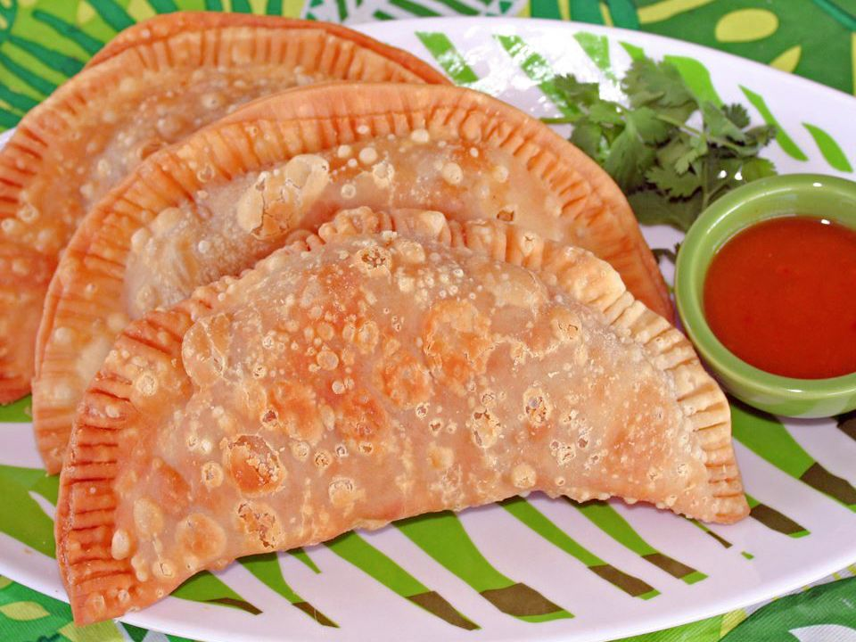

Empanadas (Beef Turnovers)

Made with Goya Discos pastry, enjoy these pockets of flavor goodness anytime you please.
Ingredients
- 1 tablespoon Goya Extra Virgin Olive Oil
- ½ pound ground beef
- ½ medium yellow onion, finely chopped
- ¼ cup Goya Tomato Sacue
- 6 Goya Spanish Olives Stuffed with Minced Pimientos, thinly sliced
- 2 tablespoons Goya Sofrito
- 1 packet Sazon Goya with Coriander and Annatto
- 1 teaspoon Goya Minced Garlic
- ½ teaspoon Goya Dried Oregano
- Goya Ground Black Pepper, to taste
- 1 (14 ounce) package yellow or white Goya Discos empanada discs, thawed
- 1 quart Goya Corn Oil, for frying
Steps
- Heat olive oil in a large skillet over medium heat. Add ground beef; cook and stir
until browned and crumbly, about 10 minutes. Add onions and cook until soft, about 5
minutes. Stir in tomato sauce, olives, sofrito, sazón, garlic, oregano, and pepper. Reduce
the heat to medium-low and simmer until mixture thickens, about 15 minutes.
- Roll empanada disks on a lightly floured surface until ½ inch large in diameter.
Spoon about 1 tablespoon meat mixture into the middle of each disk. Moisten the disk edges with
water, fold in half over filling to form a half-moon, and pinch to seal(or seal with a fork).
- Heat 2 1/2 inches corn oil in a deep-fryer or large suacepan to 350 degrees F(175 degrees C).
Working in batches, fry empanadas until crisp and golden brown, flipping once, 4 to 6 minutes. Transfer to paper
towels to drain.
La Cocina Goya Cooking Tip
Crispy empanadas, guaranteed! If you don't have a deep-fry thermometer, you can still estimate the temperature of the oil.
Just place the handle of your wooden spoon (or a wooden chopstick) into the oil. If a steady stream of bubbles emerges from the wood,
the oil is perfect. If the oil starts rapidly bubbling, or if only a few bubbles are present, then the oil is too hot or too cold, respectively.
Home